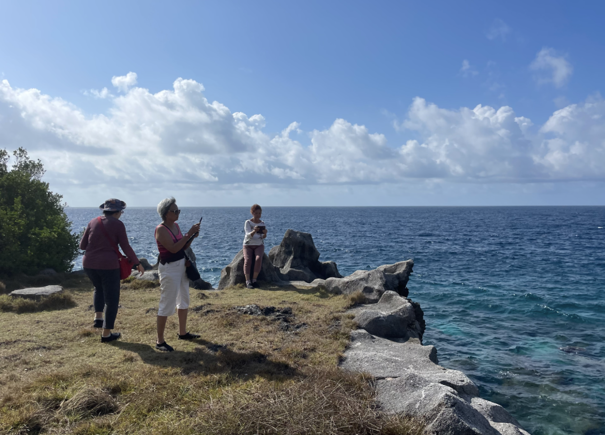
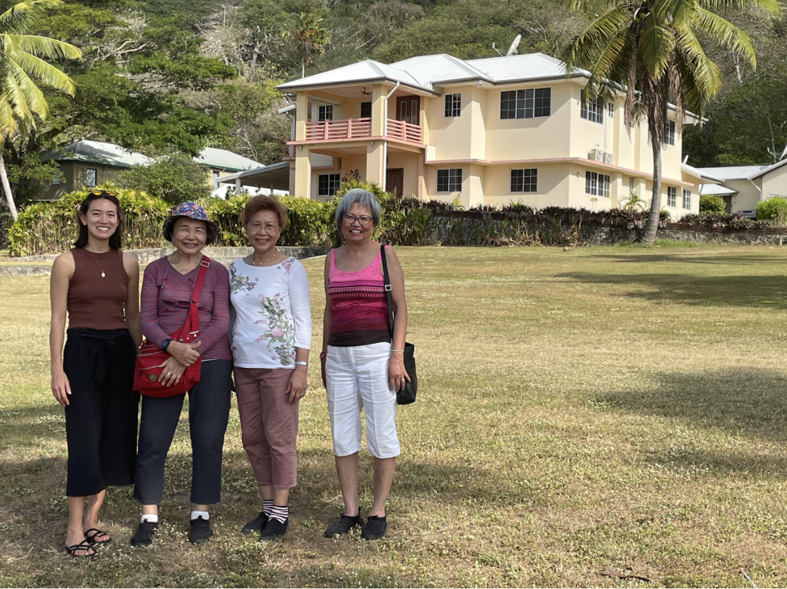
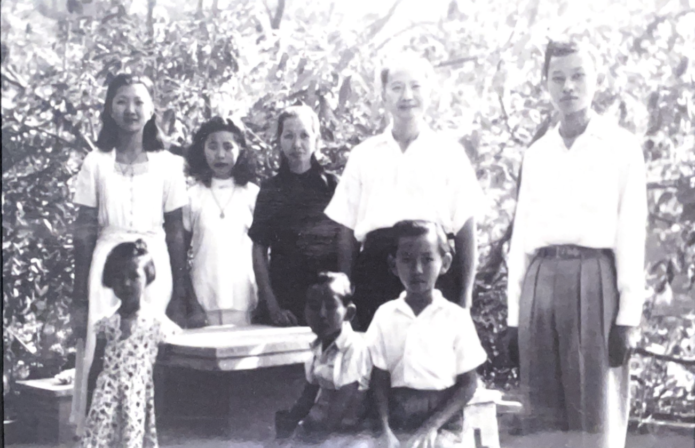
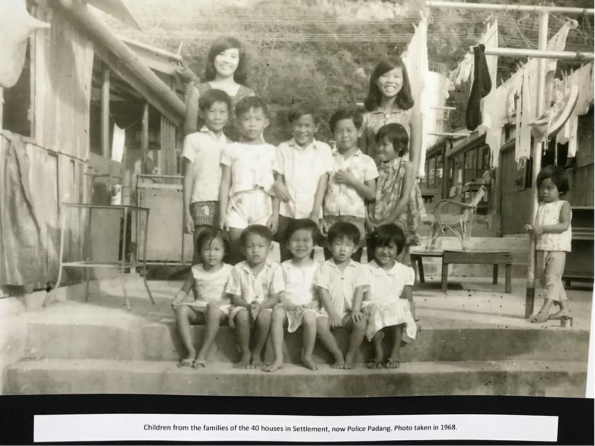
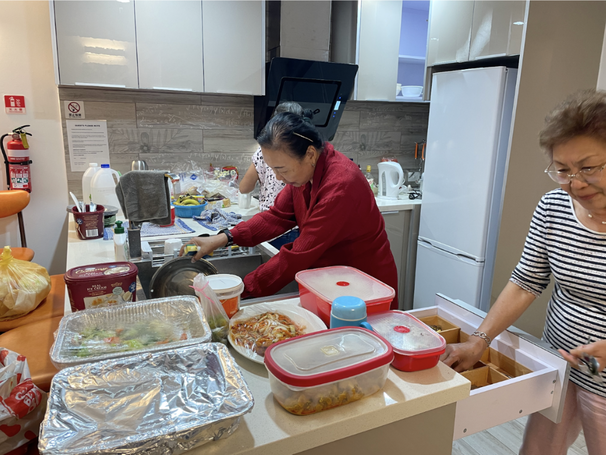

A Garden Party of Our Own:
Peng, Mah, and Han Families Return to the Island After Sixty Years
By Stephanie Niu
Originally published in "The Islander" No. 791 (August 2023), p30-33.

(left to right) Foo Kam Lan, Linda Han, and Peggy Wong at the Sitting Room. August 2023
Though neither Peggy nor Kam Lan had laid eyes on this stretch of coast in over sixty years, they both instantly recognized the spot as soon as they emerged from the dense corridor of palm fronds: “This is where our brother lost his slipper!” Rushing to the edge of the cliff, Peggy pointed out a particular rock ledge along the coast of the Sitting Room in Settlement where, decades ago, their brother had lost a shoe during some unsupervised leatherjacket fishing as a young boy. “He tried to use a fishing line to hook it back!” Peggy recalled, laughing. “And I’m the one who got beaten for it,” Kam Lan was sure to add.
Kam Lan, the eldest of a group of four women returning to Christmas Island this month after decades away, was born in 1945, right at the end of the island’s Japanese occupation. Though the island’s social landscape, political status, and built environment has changed significantly in the nearly eighty years since, Kam Lan and Peggy’s memory of the island’s coast and their connection to its seas remains just as strong. Even before I met the two sisters, I saw them fishing on the jetty in the early morning and even watched Peggy pull a leatherjacket from the water– the same fish that had gotten their brother in trouble so many years ago.
After World War II, administration of Christmas Island shifted from the UK to Singapore in 1949, turning the role of island manager from “a family affair, often with absentee managers,” to a more structured appointed position. Kam Lan’s and Peggy’s father, Foo Kok Peng, was the chef to the island manager for over two decades. The first manager after Singaporean administration, J.R. Paris, still lived in a no-longer-extant manager’s house near the old Christmas Island Club to the right of the present-day Catholic church. Kam Lan was born in a blue building nearby that is still standing; she remembers a bomb shelter from wartime located just behind the house. Soon, however, the island manager’s residence moved to Settlement, to the large house to the left of present-day Mango Tree Lodge, and the Peng family moved with them.

(left to right) Stephanie Niu, Foo Kam Lan, Peggy Wong, and Linda Han in front of the old island manager’s house. August 2023. Photo by James Pan.
In written records, Foo Kok Peng is known as “Ah Pay” or “Ah Pai.” In “We Were the Christmas Islanders,” Roy Nevile (island manager from 1951-1960) recalls asking “Ah Pai, our cook, to make round fruit cakes, sometimes over a hundredweight of them” to “repay the Chinese for their hospitality” one year around Chinese New Year. According to the Peng sisters, Australian island residents found “Ah Peng” hard to pronounce, and Peng became known as “Ah Pay” over time. In records, the chef is referred to multiple times as a “cookboy,” a practice Roy Nevile credits to Australian / British differences: “the British sometimes didn’t even know the names of their workboys and servants. It was just ‘Boy’ this or ‘Boy’ that.”

Photo captioned “Ah Pay and Family, 1949” in the Chinese Literary Association Heritage Museum.
“Cookboys” weren’t the only hired help supplied to island managers; they also had butlers, like Mah Yet, Kam Yoke Mah’s father. As the daughters of manager employees, Kam Yoke, Kam Lan, and Peggy grew up in the same house: the servant’s quarters today used as diver’s accommodation. Linda Han, their niece and a Christmas Islander, grew up making the long trek from South Point to visit her aunties and play in this house. During their trip, the four women paid a visit to their old family home to see how it has changed.
“We were luckier than a lot of people in town,” Kam Yoke recalled, standing in the hallway of the renovated building. “We had two bedrooms instead of one. And we had doors.” The Mah family of six and the Peng family of nine lived together in the small unit at the back of the sprawling manager’s house. In the 1950s on Christmas Island, most Asian families (often large, with up to nine or ten people) shared a single bedroom partitioned with a drawn curtain. These family units in areas like Forty Houses in Settlement, near the present-day police station, or in Drumsite would fill up with collapsible cots at night. Many children had to sleep on the verandah just to give everyone enough space to lay down. These quarters sorely lacked space and privacy; “I don’t know how people made so many babies,” Kam Yoke mused.

Children outside 40 houses in Settlement. 1968. Photo credit to Berri Wan.
Although the servants’ quarters had doors, it consisted of a cement floor and plank beds like many other units around Christmas Island in the 1950s. And like many Asian families on the island, for the Pengs and Mahs, living off wages was not enough. The leatherjackets that the Peng children risked their safety (and their slippers) to catch were to be sold. Peggy recalls bringing fish to the Shop Houses, a bustling commercial area at the present-day Foreshore Padang, to sell to stores; too young to ride an adult bike, she pedaled into town on only half the bike, both feet balanced on a single pedal, fresh fish in tow.
In addition to feeding the manager’s family, the Pengs raised chooks, grew vegetables, fished, and collected coconuts. Peggy remembers watching her father pull young coconuts off a tree for her to collect into a gunny sack to sell for a few cents. “I could only carry three at a time, since they were so heavy when full of water, and I was so small!” Their mother, Tang Guet Sin, was a talented seamstress and sewed clothes and nurses’ uniforms for the island. Reportedly she could recreate any garment of clothing a person gave her with just a few measurements. When not outfitting the island, Guet Sin grew sugarcane, long beans, french beans, and mango to sell. Her french beans, sold for fifty cents a bunch, were a hot commodity and usually sold out quickly.
Food was central to life in more ways than one: it was also their father’s work. As chef, in addition to preparing meals and afternoon tea (usually curry puffs, reportedly Winifred Nevile’s favorite), he cooked for elaborate garden parties held in the sprawling lawn. These soirees, reserved for the island’s “social elite,” a group determined by race as much as by rank and position, featured satays, roasts, and 1950s-style fruit cocktails. The Peng children were often unwillingly part of this production, helping their father skewer cheese and olives onto an orange for fruit cocktail, tedious work during which Peggy’s younger self would “curse them with every stick I put in.”
Like the rest of the island, the Island Manager’s house and relationship to staff was racially segregated. While Peggy recalls being invited into the manager’s presence to receive a Christmas present (a doll, which she was required to say “Thank you” rather than “Thank you very much” to receive– “very British,” she remembers), they were not allowed to set foot inside the manager’s house. Even when Christmas Island transitioned from Singaporean administration to an Australian territory in 1958, the island retained many racially segregated public spaces: the “members-only” Christmas Island Club, separate swimming facilities, separate schools, and separate modes of public transit (closed vans for caucasian residents and open-air “cattle buses” for Asian residents). Even the need for children to help earn supplemental income was a reflection of wage disparity between Asian and non-Asian workers, a system that remained in place until the efforts of the Union of Christmas Island Workers earned wage parity amongst workers and between Islanders and mainland workers in the 1970s and 80s. This week, returning to a Christmas Island with significantly reformed working rights and living conditions for its residents, the sisters entered the manager’s house for the first time in their lives, finally able to set foot in a space that represented social and racial hierarchy for so much of their childhoods.
While life on Christmas Island in the 1950s wasn’t easy, the women remember it with joy. Even a relatively harrowing act of harvest for a young girl, hopping over gravestones at night to help her father catch robber crab for dinner, is a memory Peggy recalls with happiness. “I would hop, hop, over the graves; it never scared me.” Coming back so many years later, their love for the island and familiarity with its natural abundance feels just as strong. In their accommodation in Poon Saan during this visit, I noticed a cardboard box on the floor. “Look inside!” Linda encouraged me. Opening it, I found two bunches of local banana and a papaya, enclosed together to ripen. “We were craving local fruits, and these were given to us.”
The easy generosity of islanders today seems both surprising to these women and utterly familiar. When I met to speak with them, they were busy preparing a large meal for dinner with a few other long-time Islanders who have lived here for decades; they invited me to stay. Seeing the spread of curries, breadfruit, local fish, papaya salad, and chicken rice come together, I couldn’t refuse. “We are having a manager’s garden party!” Peggy declared. In one corner, Linda and Kam Yoke were debating whether and how to invite the neighbors to have some of the food. Eating seasonally and locally and sharing generously with neighbors used to be a matter of survival to the Peng and Mah families; today, it is simply a joyful act of embracing island spirit. And, unlike the young girls skewering fruit for a garden party they were forbidden to participate in over sixty years ago, when I asked if I could help out in this Poon Saan kitchen, Peggy said no. “Your only job here is to eat.”

Kam Lan and Peggy preparing an island feast. August 2023.
This article was originally published in The Islander. To comment on this story or share your own memories of the Island, reach out to niustephanie@gmail.com.
1. Marg Neal, We Were the Christmas Islanders (Australian Capital Territory: Bruce Neale, 1988), 207.↩
2. Neal, We Were the Christmas Islanders, 102.↩
3. Neal, We Were the Christmas Islanders, 90 and 118.↩
4. Neal, We Were the Christmas Islanders, 102.↩